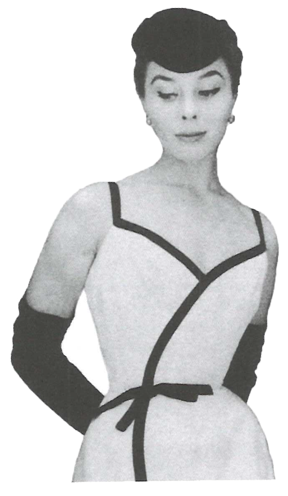
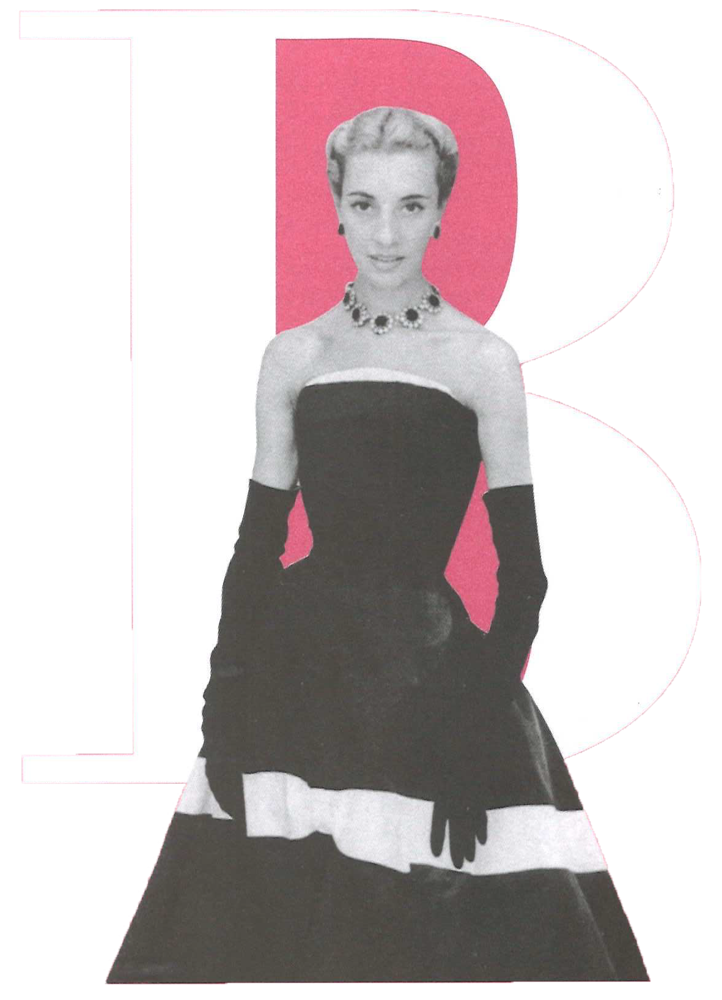

The most natural ornament of a dress because they are a natural way of closing and tying material. I love bows to close a décolleté, trim a hat, or to fasten a belt. I like them big, small, or enormous, in any way and in any material. But, one word of warning—they must be used with discretion and placed with care.

A narrow black bow trims the waistline of this short dinner dress in white grosgrain.
